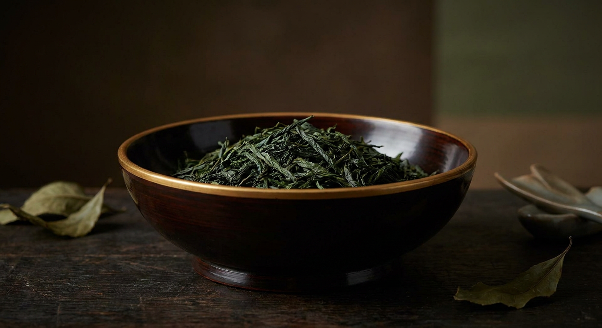

緑茶ジン（玉露・煎茶）完全ガイド
使用銘柄42本を徹底比較

日本のクラフトジンで柚子・山椒と並んで多用されるのが茶です。玉露・煎茶・抹茶・ほうじ茶と、同じ「チャノキ（Camellia sinensis）」から生まれる素材でありながら、栽培方法と製茶工程の違いで香味が大きく変わるため、造り手ごとの設計思想が出やすいボタニカルでもあります。
本ページの銘柄は、Gin-DB掲載の全銘柄から公式情報で玉露・緑茶の使用が確認できたもののみを抽出しています。最終更新：2026-08-29
玉露・緑茶のジンを買う
このページの掲載銘柄のうち、国際コンテストの受賞歴があり、公式希望小売価格が確認できているものだけを載せています。編集部の主観による順位づけはしていません。掲載外の銘柄も、各銘柄ページから購入先を開けます。
光武酒造場（佐賀県）／ 45% ／ 700ml／200ml ／ ¥2,200（税別・公式希望小売価格）／200ml ¥800（税別）
THE HERBALIST YASO GIN EXTRA HERB
越後薬草蒸留所（新潟県）／ 45% ／ 700ml ／ ¥6,380（税込・公式）
PR ／ アフィリエイトリンクを含みます。
1. 茶がジンに向いている理由
茶の香味成分は、旨味を担うテアニン、渋味のカテキン、そして加熱でうまれる香気成分に大きく分かれます。このうちジンに移りやすいのは香気成分で、蒸留の熱と時間の設計しだいで「青い香り」を残すことも「香ばしさ」を立てることもできます。
ジュニパーベリーの針葉樹的な香りと、茶の青々しさは同じ方向を向いているため、ジンの骨格を壊さずに厚みだけを足せるのが茶系ボタニカルの利点です。一方で渋味が出すぎると飲み口が重くなるため、浸漬時間や、茶葉を他のボタニカルと分けて蒸留するかどうかといった設計で調整することになります。
2. 玉露・煎茶・抹茶・ほうじ茶の違い
玉露は収穫前に一定期間、日光を遮って育てる「被覆栽培」で仕上げます。遮光によりテアニンがカテキンに変化しにくくなるため、旨味が強く渋味が穏やかになります。ジンではまろやかで奥行きのある香りを狙って使われます。
煎茶は日光を遮らずに育てた茶葉を蒸して揉んだもので、爽快な渋味と青い香りが持ち味です。ジンではキレとフレッシュさを担当します。
抹茶は玉露と同じ被覆栽培の茶葉（碾茶）を挽いた粉末で、色と旨味が濃く出ます。ほうじ茶は茶葉を焙じたもので、香ばしさとほのかな苦味が加わり、樽熟成タイプのジンと相性が良い方向に働きます。
3. 茶ジンの飲み方
茶の香りは冷やしすぎると閉じやすくなります。ロックで飲む場合は大きめの氷を使い、急激に冷やしすぎないほうが香りが立ちます。
ソーダ割りは炭酸が茶の青い香りを持ち上げるので、煎茶系のジンと好相性です。玉露系のように繊細な香りのものは、トニックの甘みに隠れることがあるため、ソーダで割って素材の輪郭を見るのがおすすめです。
和食とのペアリングでは、茶の青い香りが出汁を使った料理の邪魔をしにくい方向にあります。だし巻き卵、湯豆腐、白身魚の刺身などが合わせやすい組み合わせです。
4. 玉露・緑茶を使用しているクラフトジン 42銘柄
Gin-DB掲載の全銘柄から、公式情報で玉露・緑茶の使用が確認できたもののみを抽出しています。度数・容量・価格は各蒸溜所の公式情報に基づき、確認できないものは「未確認」と表示しています。
玉露・緑茶を使ったジンを数字で見る
地域の分布
アルコール度数の分布
度数を公式で確認できた39銘柄（42銘柄中）で数えています。
1. クラフトジン 伊勢神（ISE GIN）
伊勢萬（三重県伊勢市）
47% ／ 700ml ／ ¥4,850（税込・公式EC）
2. オーディナリー（オーディナリージン）
Motoki蒸研（京都府京都市上京区）
45% ／ 500ml／200ml／50ml ／ 500ml ¥4,950／200ml ¥2,640／50ml ¥880（税込・公式オンラインショップ）
yumarrestのシグネチャージン
3. 京都ジン ハイクラス
京都みやこ蒸溜所（京都府船井郡京丹波町）
46% ／ 700ml ／ ¥3,960（税込・公式）
4. 京都ジン
京都みやこ蒸溜所（京都府船井郡京丹波町）
40% ／ 700ml ／ ¥1,980（税込・公式）
5. 季の美 京都ドライジン
京都蒸溜所（京都府京都市）
45.7% ／ 700ml ／ 市場実勢 約¥4,500〜¥5,500（オープン価格）
6. 季のTEA 京都ドライジン
京都蒸溜所（京都府京都市）
45% ／ 700ml ／ オープン価格
7. 赤鳥居 オリジナル
光武酒造場（佐賀県鹿島市）
45% ／ 700ml／200ml ／ ¥2,200（税別・公式希望小売価格）／200ml ¥800（税別）
8. 赤鳥居 プレミアム
光武酒造場（佐賀県鹿島市）
45% ／ 700ml／200ml ／ ¥4,600（税別・公式希望小売価格）／200ml ¥1,300（税別）
9. 135° East Hyogo Dry Gin
海峡蒸溜所（兵庫県明石市）
42% ／ 700ml ／ ¥2,530（税込・公式オンラインショップ）
10. KOBE GIN YAMA
神戸蒸溜所（兵庫県神戸市北区）
43% ／ 700ml ／ ¥3,850（税込・公式）
11. PREMIUM KOBE GIN YAMA
神戸蒸溜所（兵庫県神戸市北区）
47% ／ 700ml ／ ¥8,800（税込・公式）
限定900本
12. 黄桜クラフトジン 花物語
黄桜 丹波蒸溜所（兵庫県丹波篠山市）
47% ／ 700ml ／ ¥4,500（税込・公式オンラインショップ、箱入り）
13. TATEYAMA GIN ELEMENT Series
TATEYAMA BREWING（千葉県館山市）
200ml ／ ¥1,980〜¥2,090（税込）
14. ROKU〈六〉
サントリー大阪工場（大阪府大阪市港区）
47% ／ 700ml ／ ¥4,000（税抜・公式希望小売価格）
15. 翠（SUI）
サントリー大阪工場（大阪府大阪市港区）
40% ／ 700ml ／ ¥1,380（税抜・公式希望小売価格）
16. クラフトジン 欅（KEYAKI）
Miyagi Craft Gin（宮城県大崎市）
42% ／ 700ml ／ 市場実勢 約¥4,389（税込）
Hong Kong IWSC 2021 Contemporary Gin部門最高賞、ISC 2025、フェミナリーズ 2026 金賞
17. HITOKIWA Hojicha Tea
G.N.O Inc.（宮崎県宮崎市橘通東3丁目）
¥6,600（税込・公式）
18. クラフトジン瀬戸内 -檸檬-
SETOUCHI DISTILLERY（広島県呉市）
47% ／ 700ml ／ ¥2,420（税込・公式）
WGA 2025 Contemporary Style Gin Gold、TWSC 2022/2023/2024 金賞（殿堂入り）、フェミナリーズ 2022/2023/2024 金賞
19. クラフトジン瀬戸内 -甘夏-
SETOUCHI DISTILLERY（広島県呉市）
47% ／ 700ml ／ ¥2,750（税込・公式）
WGA 2025 Bronze、TWSC 2024 金賞、フェミナリーズ 2025 金賞
20. SAKURAO GIN ORIGINAL
サクラオB&D（広島県廿日市市）
47% ／ 700ml ／ ¥2,000（税別・公式参考小売価格）
21. SAKURAO GIN HAMAGOU
サクラオB&D（広島県廿日市市）
47% ／ 700ml ／ ¥2,860（税込・参考）
5,000本限定。WGA 2021 Gold（London Dry Gin部門。同部門の日本代表はORIGINAL）
22. 愛知クラフトジン キヨス
清洲桜醸造（愛知県清須市）
40% ／ 500ml ／ 公式オンラインで要確認
IWSC 2020 金賞95点、TWSC 2023 洋酒部門 銀賞
23. THE HERBALIST YASO GIN EXTRA HERB
越後薬草蒸留所（新潟県上越市）
45% ／ 700ml ／ ¥6,380（税込・公式）
24. Blue Rabbit Tokyo Dry Gin
Blue Rabbit Distillery（東京都大田区田園調布）
43% ／ 700ml ／ ¥5,950（税込・正規流通）
25. LAST EN -縁-
東京リバーサイド蒸溜所（東京都台東区）
41% ／ 700ml ／ ¥3,850（700ml・公式EC）
26. The Japanese Craft GIN 黄金井
黄金井酒造（神奈川県厚木市）
43% ／ 500ml ／ ¥5,280（税込・公式オンラインショップ）
TWSC 3年連続メダル受賞（2022 シルバーほか）
27. The Japanese Craft GIN 黄金井
黄金井酒造（神奈川県厚木市）
43% ／ 200ml ／ ¥2,200（税込・公式オンラインショップ）
28. 福岡ジン
リトルフラワー蒸留所（福岡県福岡市中央区）
43% ／ 500ml ／ ¥4,620（税込・希望小売価格）
2026年9月10日一般販売開始
29. KITAYA CRAFT GIN
喜多屋（福岡県八女市）
45% ／ 500ml ／ ¥4,400（税込・公式）
30. Jin40 - ASAKURA CRAFT GIN
朝倉蒸溜所(篠崎)（福岡県朝倉市）
45% ／ 750ml ／ ¥3,847（税込・公式EC）
31. Freeee!!! - ASAKURA CRAFT GIN
朝倉蒸溜所(篠崎)（福岡県朝倉市）
500ml ／ 未確認
売切表示
32. 001 Gin
PLOW（茨城県猿島郡五霞町）
40% ／ 500ml ／ ¥3,500（税込・公式）
定番
33. 002 Herb Gin
PLOW（茨城県猿島郡五霞町）
40% ／ 500ml ／ ¥3,500（税込・公式）
定番
34. 香の森（KANOMORI）
養命酒製造 駒ヶ根工場（長野県駒ヶ根市）
47% ／ 700ml ／ ¥5,192（税込・公式希望小売）
2026-09-20時点で養命酒の公式サイトの商品一覧に掲載が無い（終売の告知は未確認）
35. LAZY MASTER ~Lushly Green~
沼津蒸留所（静岡県沼津市）
42% ／ 500ml ／ ¥4,610（公式サイト掲載価格・税込/税別の表記なし）
36. LAZY MASTER ~Smoky Gold~
沼津蒸留所（静岡県沼津市）
42% ／ 500ml ／ 市場実勢 約¥4,500
37. 白兎-HAKUTO-（マツイ ジン 白兎）
松井酒造（鳥取県倉吉市）
40% ／ 700ml ／ ¥1,496（税込・公式希望小売）
38. 和美人（Japanese GIN 和美人）
マルス津貫蒸溜所(本坊酒造)（鹿児島県南さつま市）
47% ／ 700ml ／ ¥4,400（税込・ギフト箱付）／¥4,180（ボトルのみ）
TWSC Best of the Best 2024、ISC 2024 Double Gold、SFWSC 2024 Gold
39. 和美人 ダマスクローズ
マルス津貫蒸溜所(本坊酒造)（鹿児島県南さつま市）
45% ／ 495ml ／ ¥3,850（税込）
限定
40. AKAYANE CRAFT GIN（緑茶）
佐多宗二商店（鹿児島県南九州市頴娃町）
47% ／ 720ml ／ ¥5,280（税込・市場実勢）
41. GIN HEART 春 [Haru]
佐多宗二商店（鹿児島県南九州市頴娃町）
46% ／ 720ml ／ 未確認
42. KOMASA GIN ほうじ茶
小正醸造（鹿児島県日置市日吉町）
45% ／ 500ml ／ ¥3,850（税込・公式）
5. 42銘柄スペック比較表
| # | 銘柄 | 所在地 | 度数 | 価格 |
|---|---|---|---|---|
| 1 | クラフトジン 伊勢神（ISE GIN） | 三重県 | 47% | ¥4,850（税込・公式EC） |
| 2 | オーディナリー（オーディナリージン） | 京都府 | 45% | 500ml ¥4,950／200ml ¥2,640／50ml ¥880（税込・公式オンラインショップ） |
| 3 | 京都ジン ハイクラス | 京都府 | 46% | ¥3,960（税込・公式） |
| 4 | 京都ジン | 京都府 | 40% | ¥1,980（税込・公式） |
| 5 | 季の美 京都ドライジン | 京都府 | 45.7% | 市場実勢 約¥4,500〜¥5,500（オープン価格） |
| 6 | 季のTEA 京都ドライジン | 京都府 | 45% | オープン価格 |
| 7 | 赤鳥居 オリジナル | 佐賀県 | 45% | ¥2,200（税別・公式希望小売価格）／200ml ¥800（税別） |
| 8 | 赤鳥居 プレミアム | 佐賀県 | 45% | ¥4,600（税別・公式希望小売価格）／200ml ¥1,300（税別） |
| 9 | 135° East Hyogo Dry Gin | 兵庫県 | 42% | ¥2,530（税込・公式オンラインショップ） |
| 10 | KOBE GIN YAMA | 兵庫県 | 43% | ¥3,850（税込・公式） |
| 11 | PREMIUM KOBE GIN YAMA | 兵庫県 | 47% | ¥8,800（税込・公式） |
| 12 | 黄桜クラフトジン 花物語 | 兵庫県 | 47% | ¥4,500（税込・公式オンラインショップ、箱入り） |
| 13 | TATEYAMA GIN ELEMENT Series | 千葉県 | 未確認 | ¥1,980〜¥2,090（税込） |
| 14 | ROKU〈六〉 | 大阪府 | 47% | ¥4,000（税抜・公式希望小売価格） |
| 15 | 翠（SUI） | 大阪府 | 40% | ¥1,380（税抜・公式希望小売価格） |
| 16 | クラフトジン 欅（KEYAKI） | 宮城県 | 42% | 市場実勢 約¥4,389（税込） |
| 17 | HITOKIWA Hojicha Tea | 宮崎県 | 未確認 | ¥6,600（税込・公式） |
| 18 | クラフトジン瀬戸内 -檸檬- | 広島県 | 47% | ¥2,420（税込・公式） |
| 19 | クラフトジン瀬戸内 -甘夏- | 広島県 | 47% | ¥2,750（税込・公式） |
| 20 | SAKURAO GIN ORIGINAL | 広島県 | 47% | ¥2,000（税別・公式参考小売価格） |
| 21 | SAKURAO GIN HAMAGOU | 広島県 | 47% | ¥2,860（税込・参考） |
| 22 | 愛知クラフトジン キヨス | 愛知県 | 40% | 公式オンラインで要確認 |
| 23 | THE HERBALIST YASO GIN EXTRA HERB | 新潟県 | 45% | ¥6,380（税込・公式） |
| 24 | Blue Rabbit Tokyo Dry Gin | 東京都 | 43% | ¥5,950（税込・正規流通） |
| 25 | LAST EN -縁- | 東京都 | 41% | ¥3,850（700ml・公式EC） |
| 26 | The Japanese Craft GIN 黄金井 | 神奈川県 | 43% | ¥5,280（税込・公式オンラインショップ） |
| 27 | The Japanese Craft GIN 黄金井 | 神奈川県 | 43% | ¥2,200（税込・公式オンラインショップ） |
| 28 | 福岡ジン | 福岡県 | 43% | ¥4,620（税込・希望小売価格） |
| 29 | KITAYA CRAFT GIN | 福岡県 | 45% | ¥4,400（税込・公式） |
| 30 | Jin40 - ASAKURA CRAFT GIN | 福岡県 | 45% | ¥3,847（税込・公式EC） |
| 31 | Freeee!!! - ASAKURA CRAFT GIN | 福岡県 | 未確認 | 未確認 |
| 32 | 001 Gin | 茨城県 | 40% | ¥3,500（税込・公式） |
| 33 | 002 Herb Gin | 茨城県 | 40% | ¥3,500（税込・公式） |
| 34 | 香の森（KANOMORI） | 長野県 | 47% | ¥5,192（税込・公式希望小売） |
| 35 | LAZY MASTER ~Lushly Green~ | 静岡県 | 42% | ¥4,610（公式サイト掲載価格・税込/税別の表記なし） |
| 36 | LAZY MASTER ~Smoky Gold~ | 静岡県 | 42% | 市場実勢 約¥4,500 |
| 37 | 白兎-HAKUTO-（マツイ ジン 白兎） | 鳥取県 | 40% | ¥1,496（税込・公式希望小売） |
| 38 | 和美人（Japanese GIN 和美人） | 鹿児島県 | 47% | ¥4,400（税込・ギフト箱付）／¥4,180（ボトルのみ） |
| 39 | 和美人 ダマスクローズ | 鹿児島県 | 45% | ¥3,850（税込） |
| 40 | AKAYANE CRAFT GIN（緑茶） | 鹿児島県 | 47% | ¥5,280（税込・市場実勢） |
| 41 | GIN HEART 春 [Haru] | 鹿児島県 | 46% | 未確認 |
| 42 | KOMASA GIN ほうじ茶 | 鹿児島県 | 45% | ¥3,850（税込・公式） |
6. よくある質問（FAQ）
Q. 茶葉が入っているジンは緑色ですか？
A. 必ずしも緑色ではありません。茶葉を浸漬させると色が付くことがありますが、蒸留して香りだけを取る製法では無色透明に仕上がります。色は製法の違いであって、茶の使用量とは一致しません。
Q. 玉露のジンと抹茶のジンは何が違いますか？
A. 原料の栽培方法は近い（どちらも被覆栽培）ものの、抹茶は茶葉（碾茶）を挽いた粉末、玉露は葉の形で仕上げた茶という違いがあります。ジンでの香味の出方は、浸漬するか蒸留するかといった製法にも左右されるため、各銘柄のボタニカル構成と公式の説明をご確認ください。
Q. カフェインは入っていますか？
A. 茶葉を使う以上、微量のカフェインが移行する可能性はあります。含有量は製法と使用量に依存し、公表していない銘柄がほとんどです。正確な数値が必要な場合は各蒸溜所へ直接ご確認ください。